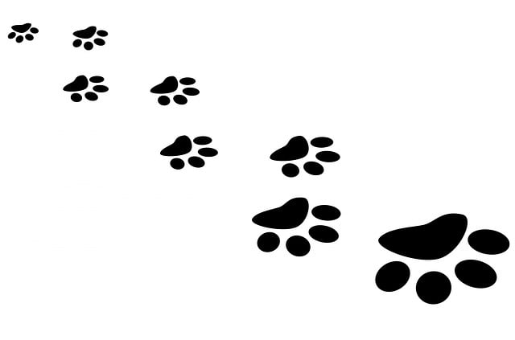

Our Impact
Since our inception, we have successfully placed thousands of animals into caring homes. We prioritize responsible adoptions, ensuring that each potential adopter undergoes a thorough screening process to ensure the best possible match between the pet and the adopter.
Our organization actively collaborates with local communities, schools, and other animal welfare organizations to raise awareness about the importance of pet adoption and responsible pet ownership. We organize educational programs, community outreach events, and fundraising campaigns to support our mission.
